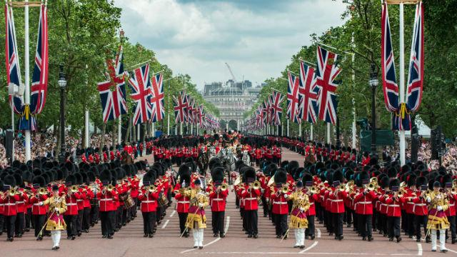
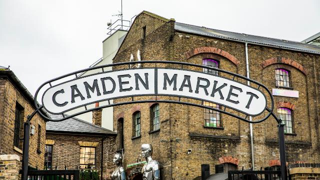
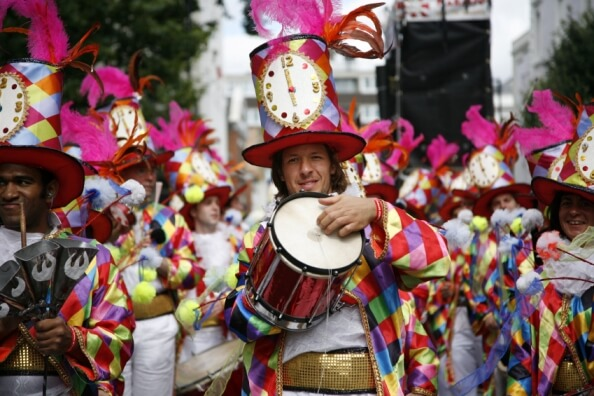

Cultura de Londres, Inglaterra
Londres es una ciudad vibrante y multicultural, conocida por su rica historia, su diversidad étnica y su influencia en las artes y la cultura. La ciudad alberga algunos de los museos más importantes del mundo, como el Museo Británico y la Galería Nacional. Además, es famosa por su escena teatral en el West End, sus conciertos y festivales de música, y su vida nocturna.
Los mercados callejeros, como Camden Market y Portobello Road, son puntos clave para experimentar la cultura local y encontrar artesanías, moda y gastronomía de todo el mundo. Los parques y jardines, como Hyde Park y Kew Gardens, ofrecen espacios verdes para el esparcimiento y la relajación.
La diversidad cultural de Londres se refleja en su gastronomía, con una amplia gama de restaurantes que ofrecen platos de todas partes del mundo. La ciudad también celebra numerosos festivales culturales y eventos durante todo el año, como el Carnaval de Notting Hill, el Festival de Cine de Londres y el Día de San Patricio.